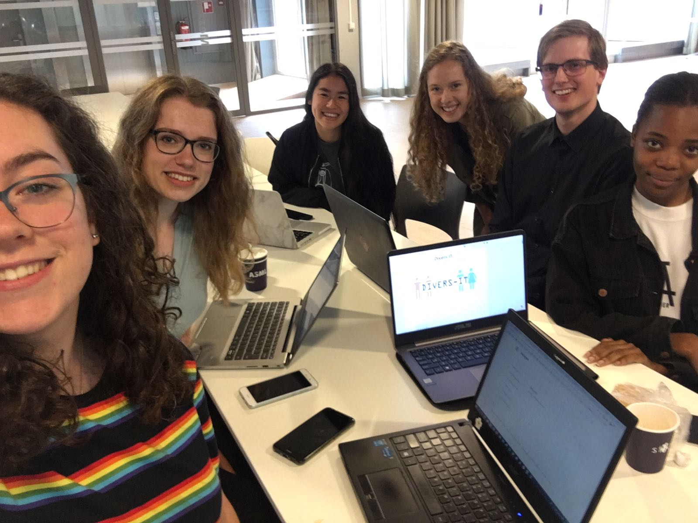

Divers-IT team
De Divers-IT website is gemaakt door een team van zes gemotiveerde informatiekunde studenten aan de Universiteit Utrecht, als eindproduct van het introductieproject dat het eerste jaar van de bachelor afsluit. Dit jaar had het introductieproject het thema diversiteit, wat op de één of andere manier in het eindresultaat moet terugkomen in de vorm van een verbetering van de maatschappij. Het idee voor de Divers-IT website ontstond door de realisatie dat er bij ons op de universiteit significant minder vrouwen dan mannen ICT-gerelateerde studies zoals Informatiekunde en informatica doen. Wij vroegen ons af waarom dat is, omdat wij ons eerste jaar Informatiekunde wel erg leuk vonden. We werden nieuwsgierig: is dit een goede representatie van het aantal vrouwen dat in de ICT werkt? En als dat zo is, hoe kunnen wij meer genderdiversiteit in de ICT-sector brengen? Ons antwoord op die laatste vraag is Divers-IT.
Divers-IT is bedoeld om interesse te wekken voor ICT-studies en ICT-gerelateerde banen. Op deze manier proberen we mensen te laten zien dat ICT niet alleen voor mannen is, maar voor iedereen. De Divers-IT website is voor iedereen bedoeld, want onze idealen zijn diversiteit en gelijkheid. We leggen dus de focus op mensen die zich identificeren als vrouw, zonder anderen buiten te sluiten.
Het Divers-IT team is hardwerkend, ijverig, gezellig, perfectionistisch, enthousiast en maakt veel (slechte) woordgrappen, maar hun echte namen zijn, op volgorde van links naar rechts op de foto: Annemik, Merel, Shannon, Iris, Jos en Daniëlle. Door ulteam teamwork is het idee voor Divers-IT binnen de span van tien weken uitgegroeid tot de website die het nu is. Alle teamleden studeren Informatiekunde aan de Universiteit Utrecht en willen je graag meenemen in hun studiekeuzeproces.
Annemik
“Omdat ik aan het begin van 6V nog steeds niet zeker wist wat ik wilde studeren, sloeg bij mij de keuzestress vrij hard toe. Vanwege mijn Economie & Maatschappij-profiel (met biologie) mocht ik veel bètastudies niet doen en had ik eigenlijk al geaccepteerd dat ik geen ICT-studie kon doen. Toen wees een goede vriendin me op Informatiekunde, een studie waar ik zelf nog nooit van had gehoord. Ik schreef me in voor een meeloopdag met een ‘je weet maar nooit’-instelling en het paste veel beter bij me dan ik had gedacht. In Informatiekunde heb ik vrijwel alle aspecten gevonden die ik in een studie zocht: ICT-gerelateerd, maar toch met een focus op de menselijke kant.”
Merel
“Ik ben op deze studie terecht gekomen, omdat ik een keer naar een open dag ging voor Informatica. Dit vak volgde ik al met veel plezier op de middelbare school. Toch zag ik mezelf niet elke dag voor mijn werk programmeren. Ik was eerder geïnteresseerd in de interactie tussen de gebruiker en een informatiesysteem. Toen ik op die open dag dus hoorde over de studie Informatiekunde, was ik meteen enthousiast. Ik zou later dan ook graag iets met User Experience willen doen.”
Shannon
“Ik ben bij deze studie terecht gekomen, toen ik naar een open dag ging van de Universiteit Utrecht. Ik had twee andere studies uitgekozen om te bezoeken, maar ik wilde er graag nog eentje. Ik was aan het rondkijken op de site bij alle bachelors en zag daar Informatica staan. Ik heb Economie & Maatschappij gedaan met wiskunde A, dus Informatica was geen optie. Toen zag ik toevallig Informatiekunde staan. Ik had er nog nooit van gehoord, maar het klonk interessant. Zodoende ben ik naar de open dag gegaan van Informatiekunde en heb ik mij ingeschreven voor de studie.”
Iris
“Toen ik een keuze moest maken voor een studie, had ik eerst geen idee wat ik wilde doen. Ik had daarom zo veel mogelijk open dagen bezocht, waar ik had gekeken naar studies in allerlei verschillende richtingen; van Notarieel Recht tot Landschapsarchitectuur en Ruimtelijke Planning tot Technische Bedrijfskunde. Aanvankelijk was ik niet van plan om naar ICT studies te kijken, maar aangezien mijn vader een ICT-gerelateerde studie had gedaan en dacht dat Informatiekunde wel wat voor mij was, had ik me toch nog opgegeven om naar de open dag te gaan van deze studie. Na het bezoeken van alle open dagen was Informatiekunde uiteindelijk het meest blijven hangen. Wat mij aansprak van deze studie was dat de focus niet alleen maar op computers ligt, maar ook op het menselijke aspect. Ik was nog steeds enthousiast over deze studie na de meeloopdag, en heb me daarna ingeschreven voor de opleiding in Utrecht.
Jos
“Jarenlang wilde ik geneeskunde studeren, maar na meerdere open dagen, een meeloopdag en de realisatie dat ik biologie niet echt leuk vond, moest ik wat anders zoeken. Tijdens de middelbare school heb ik voor een half jaar (tot de leraar stopte) Informatica gevolgd en wat we hier deden vond ik wel leuk. Aangezien ik geen wiskunde B deed, kon ik geen Informatica studeren, maar ik werd gewezen op een andere studie, namelijk Informatiekunde. Na het volgen van de open dag in Groningen wist ik zeker dat ik Informatiekunde wilde studeren. Nu was de vraag nog: waar? De taalkundige kant van Groningen vond ik niet interessant. In Utrecht bleek veel ruimte voor keuze in de studie te zijn, dus ging ik hier nog een kijkje nemen en uiteindelijk heb ik voor Informatiekunde in Utrecht gekozen.”
Daniëlle
“Ik ben bij deze studie gekomen zoals een serendipiteit werkt. Ik was tijdens de open dag in Utrecht geïnteresseerd in Rechtsgeleerdheid en kwam bij Informatica terecht omdat dat goed viel gezien het rooster. Via Informatica ben ik meer te weten gekomen over het bestaan van Informatiekunde. Na een meeloopdag te hebben gedaan in Utrecht, vond ik dat de studie goed bij mij aansluit. Dit kwam vooral door de modelleeropgavens die we toen deden.”